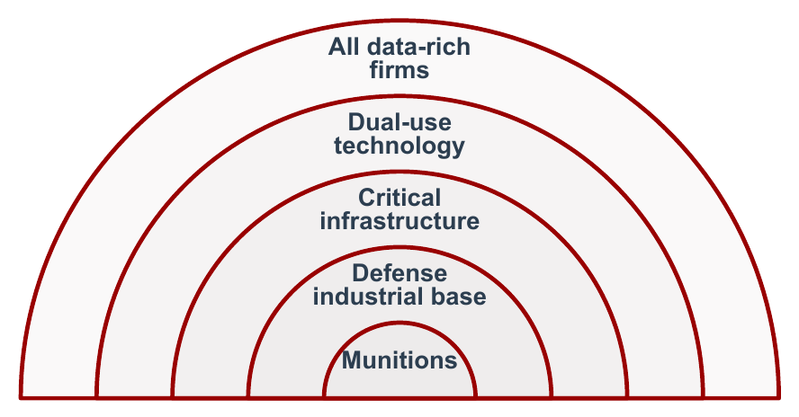
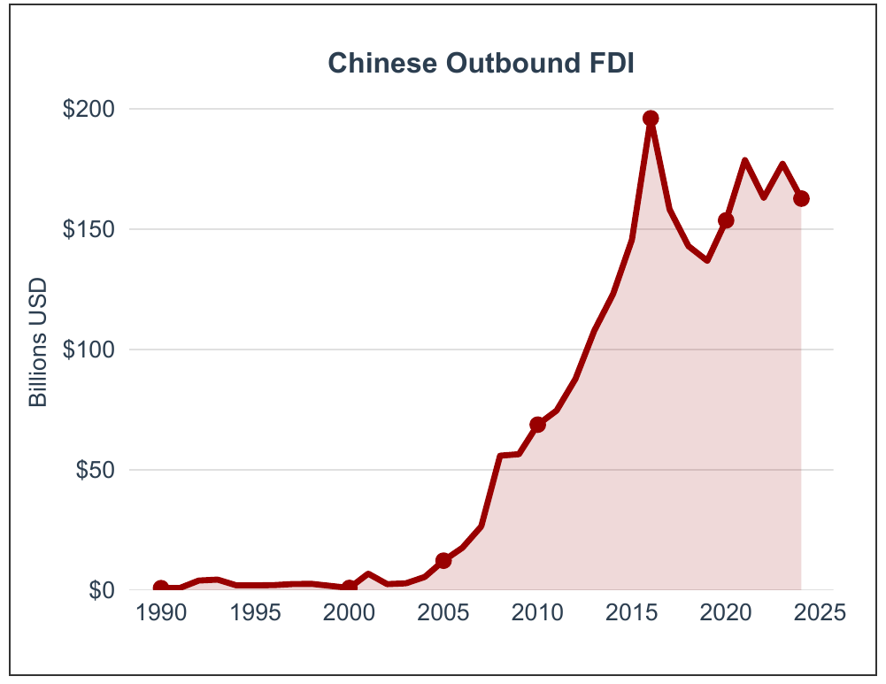
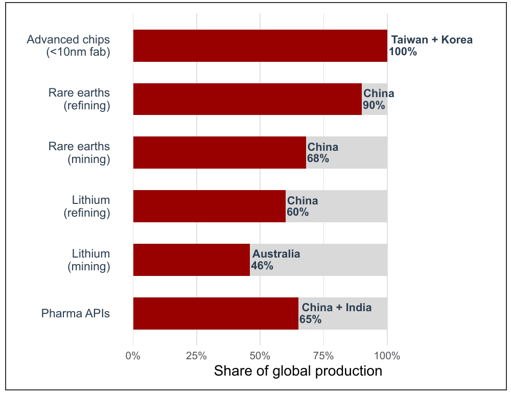
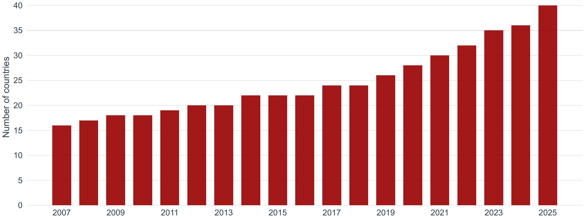
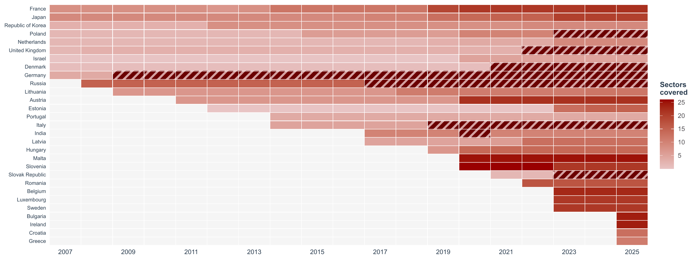
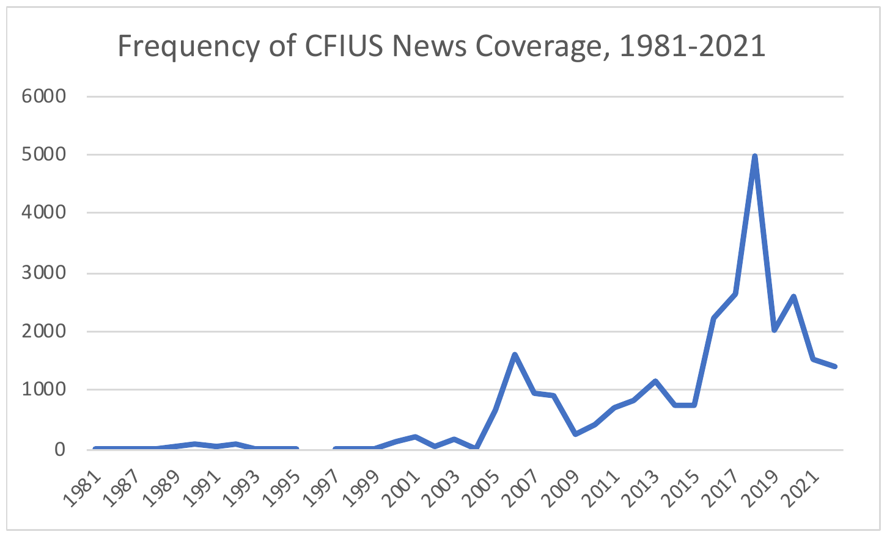

Global Business
INTL-I103 | Day 22 — National Security, Investment Screening & CFIUS
November 9, 2026
Today’s Plan
Today’s Big Question
When does foreign ownership become a national security threat, and how should firms respond to increasing securitization of investment policy?
| Section | What we’ll cover |
|---|---|
| 1 · What makes FDI a security risk? | Three traditional risks and three emerging concerns |
| 2 · The proliferation of investment screening | The expansion of screening authorities globally |
| 3 · How CFIUS works | The history of CFIUS rules; who sits on the committee and how review works today |
| 4 · Risk-based regulation shifts key decisions to firms | How firms decide when to file with the committee (new research) |
| 5 · Securitization | Why a tool built to depoliticize investment keeps expanding |
| 6 · Credible threat or pretext? | Discussion: a four-question test applied to three foreign acquisitions |
What makes FDI a security risk?
Is this a national security threat?
| Year | The deal | What the U.S. government did |
|---|---|---|
| 2017 | A Chinese state-backed fund buys a U.S. maker of programmable chips (Lattice) | Blocked by the president |
| 2019 | A Chinese gaming company owns a U.S. dating app (Grindr) that collects users’ HIV status | Forced to sell |
| 2020 | A Chinese company buys U.S. hotel-management software used in hotels that U.S. personnel stay at on work trips (StayNTouch) | Divestment by the president |
| 2024 | A Chinese-backed crypto miner buys land near a nuclear missile base in Wyoming (MineOne) | Ordered to sell the land |
| 2023–25 | A Japanese steelmaker buys U.S. Steel (Nippon Steel) | Blocked by Biden; approved by Trump with a “golden share” |
With a neighbor: rank these from most to least threatening. What would have to be true for each one to harm U.S. security?
Source: CRS, CFIUS (IF10177, Aug. 2026), Table 1; Grindr: CFIUS order to Beijing Kunlun Tech (2019)
Six ways foreign ownership can create risk
Leverage: a foreign owner controls goods or services the country depends on, and could delay, deny, or attach conditions to supply
Technology leakage: sensitive know-how moves abroad
Espionage or sabotage: physical, logical, or cyber access to critical systems
State-directed investors: buyers guided by government goals, not only profit
Dual-use technology: AI, chips, data, and biotech have both civilian and military uses
Supply-chain security: control of key inputs, minerals, ports, and logistics
Sources: Moran (2009), Three Threats: An Analytical Framework for the CFIUS Process; Bauerle Danzman (2026), Investment Screening: An Introduction for Policymakers
National security is not a fixed concept

- What counts: weapons → defense suppliers (1970s–90s) → infrastructure (2000s) → dual-use tech (2010s) → data-rich firms (today)
- Screening regimes covering sensitive personal data: 0 of 18 (2010) → 18 of 40 (2025)


Sources: Bauerle Danzman & Meunier (2026), “The Paradox of Managed Openness,” ISA; PRISM dataset; UNCTAD WIR 2025; SIA 2021; USGS 2025; IEA 2025
The proliferation of investment screening
From 16 to 40 economies, and growing


16 → 40 economies screen (2007–2025); +16 since 2019
Europe: 8 → 29. New EU rules: every member state must screen by 2028
Why: China as an investor; technology widens what is “sensitive”; countries copy each other
Source: PRISM dataset (Bauerle Danzman & Meunier 2023, 2025 update); Bauerle Danzman & Meunier, “If You Can’t Beat Them, Join Them”
How CFIUS works
CFIUS Developed Piecemeal over 50 Years
Trigger: OPEC petrodollars; Congress weighing restrictions
Trigger: Japanese purchases, e.g., Fujitsu–Fairchild
Trigger: Dubai Ports World (2006)
Trigger: Chinese tech acquisitions
The pattern: each crisis widens CFIUS’s reach. No reform has narrowed it.
Sources: CRS, CFIUS (IF10177, Aug. 2026) and CRS report (Feb. 2020, assigned); Bauerle Danzman (2025), “A Tool Is Not a Strategy,” JIEL
CFIUS’s Structure
Observers: five White House offices, e.g., National Security Council
- Each case: Treasury + a co-lead agency with the relevant expertise
- The co-lead monitors mitigation agreements (234 active, end of 2025)
- Control of a U.S. business by a foreign person
- Minority, non-passive stakes in TID firms: critical Technology, critical Infrastructure, sensitive personal Data
- Real estate near military sites, ports, and airports
Filing is mandatory only if a foreign government takes a substantial interest in a TID firm, or the firm makes export-controlled critical technology. Otherwise it is voluntary.
30 days
45 days
45 (+15) days
15 days
Source: CRS, CFIUS (IF10177, Aug. 2026)
Filings and outcomes, 2008–2025
| Year | Notices | Declarations |
Investigations (% of notices) |
Withdrawn | Mitigated | Presidential decisions |
|---|---|---|---|---|---|---|
| 2008 | 155 | — | 23 (15%) | 23 | 2 | 0 |
| 2010 | 93 | — | 35 (38%) | 12 | 8 | 0 |
| 2012 | 114 | — | 45 (39%) | 22 | 5 | 1 |
| 2014 | 147 | — | 52 (35%) | 12 | 9 | 0 |
| 2016 | 172 | — | 79 (46%) | 27 | 17 | 1 |
| 2017 | 237 | — | 172 (73%) | 74 | 30 | 1 |
| 2018 | 229 | — | 158 (69%) | 66 | 37 | 1 |
| 2019 | 231 | 94 | 113 (49%) | 30 | 28 | 1 |
| 2020 | 187 | 126 | 88 (47%) | 29 | 16 | 2 |
| 2021 | 272 | 164 | 130 (48%) | 74 | 26 | 0 |
| 2022 | 286 | 154 | 163 (57%) | 88 | 41 | 0 |
| 2023 | 233 | 109 | 128 (55%) | 57 | 35 | 0 |
| 2024 | 209 | 116 | 116 (56%) | 49 | 25 | 2 |
| 2025 | 207 | 140 | 114 (55%) | 58 | 25 | 2 |
Shaded: FIRRMA (2018); short-form declarations began with its pilot program. Withdrawn 2024–25 counts withdrawals during investigation; most withdrawn notices are refiled. Sources: U.S. Treasury, CFIUS covered-transactions table, 2008–2023; CFIUS Annual Reports to Congress, CY2019 and CY2025 (via CRS IF10177, Aug. 2026)
- Volume: ~200–290 notices a year since 2017, plus 100–160 declarations
- Scrutiny: investigated share 15% → 55%+
- Mitigation is the main tool: 2 deals (2008) → 16–41 a year since 2017
- Blocks stay rare: 0–2 a year
The legal test: the president may block only on credible evidence of a threat that no other law can address
Presidential blocks: rare, and mostly China
| Year | Buyer | U.S. target | Sector |
|---|---|---|---|
| 1990 | CATIC (China) | MAMCO | Aerospace |
| 2012 | Ralls / Sany (China) | Wind farms near a Navy site | Energy |
| 2016 | Fujian Grand Chip (China) | Aixtron (U.S. business) | Semiconductors |
| 2017 | Canyon Bridge (China-backed) | Lattice | Semiconductors |
| 2018 | Broadcom (Singapore) | Qualcomm | Semiconductors |
| 2020 | Beijing Shiji (China) | StayNTouch | Software |
| 2020* | ByteDance (China) | Musical.ly (TikTok) | Social media |
| 2024 | MineOne (China-backed) | Land near missile base | Real estate |
| 2025* | Nippon Steel (Japan) | U.S. Steel | Steel |
| 2025 | Suirui (China) | Jupiter Systems | AV equipment |
| 2026 | HieFo (China) | EMCORE assets | Semiconductors |
* Order not enforced. Source: CRS, CFIUS (IF10177, Aug. 2026), Table 1
- 11 blocks in 50 years
- 9 of 11 involve Chinese buyers
- 4 of 11 in semiconductors
- Two not enforced: TikTok (ByteDance) and U.S. Steel
Risk-based regulation shifts key decisions to firms
The paper: “Navigating Uncertainty”
“Navigating Uncertainty: Learning and Compliance in CFIUS Reviews of Cross-Border Deals” Bauerle Danzman (Indiana), Li (LSE), Shim (UT Dallas) & Tomashevskiy (Rutgers) · working paper, 2026
Puzzle
Most filings are voluntary and costly, and not filing usually goes unpunished. Why do firms volunteer for review, and which deals do they file?
Argument
Government defines “risk” with classified information and changes its view across administrations. So compliance becomes learning: firms infer the unwritten standard from reviews of comparable firms
Data
25,757 foreign acquisitions involving a publicly traded party (1995–2022); an original dataset of 1,054 CFIUS reviews from SEC disclosures, law firms, and news
Method
Decision-theoretic model → hypotheses. Linear probability and Poisson models with home-country and industry fixed effects
Findings
Firms file more after recent reviews of same-industry and same-country deals, and (more tentatively) as a presidential election nears
Implication
Uncertainty produces precautionary filing for safe harbor, which undercuts the efficiency of risk-based regulation
From the model to testable hypotheses
| Proposition (model) | Logic | Testable hypothesis | Measure |
|---|---|---|---|
| P1 · Optimal filing | File when the expected chance of a post-closing review exceeds a threshold: the cost of filing relative to the cost of being reviewed (and forced to sell) later | Bigger deals, state-owned buyers, and cheaper reviews → more filing | Controls: deal size, state ownership, FDI, trade, UN votes |
| P2 · Learning from peers and enforcement | The standard is classified, so firms infer it: each peer filing or government-initiated review raises the next firm’s estimate that its deal is risky |
H1: more recent reviews of same-country deals → more filing H2: more recent reviews of same-industry deals → more filing |
Decay-weighted count of prior reviews (half-life ~6 years) |
| P3 · Political turnover | Safe harbor protects a cleared deal from the next administration; if a successor may be as hawkish or more, its insurance value rises near elections | H3: filing rises as the next presidential election nears | Years to next election (4 → 0) |
Source: Bauerle Danzman, Li, Shim & Tomashevskiy (2026), Propositions 1–3 and Hypotheses 1–3
Results: firms learn from peers and hedge against elections
\[\text{CFIUS Filing}_i = \beta_0 + \beta_1\,\text{Co-national}_i + \beta_2\,\text{Co-industrial}_i + \beta_3\,\text{Years to Election}_i + \beta_4 Z_i + \gamma + \tau + \chi + u_i\]
|
Model 1 LPM |
Model 2 LPM |
Model 3 PPML |
Model 4 PPML |
|
|---|---|---|---|---|
| Co-national reviews (H1) |
0.0006*** (0.0002) |
0.0005*** (0.0002) |
0.0084** (0.0034) |
0.0071** (0.0036) |
| Co-industrial reviews (H2) |
0.0013*** (0.0005) |
0.0012** (0.0005) |
0.0127*** (0.0032) |
0.0127*** (0.0034) |
| Years to election (H3) |
−0.0026* (0.0013) |
−0.0026* (0.0013) |
−0.1092*** (0.0379) |
−0.1034*** (0.0389) |
| Acquirer’s own prior filings |
0.0083*** (0.0027) |
0.0848*** (0.0211) |
||
| State-owned investor |
0.0550*** (0.0146) |
0.0510*** (0.0148) |
0.8932*** (0.1519) |
0.7815*** (0.1800) |
| Cost-of-review controls; period shocks; home & industry FE | Yes | Yes | Yes | Yes |
| Observations | 24,607 | 24,607 | 22,725 | 22,725 |
Table 1, Bauerle Danzman et al. (2026). SEs clustered by industry. * p<0.1, ** p<0.05, *** p<0.01. γ: crisis/COVID/Trump-term indicators; τ: home-country FE; χ: industry FE
Same industry: 25th → 75th percentile of recent reviews raises the chance of filing 1.49% → 2.54% (+71%)
Same home country: 1.64% → 2.62% (+60%)
Election: a deal announced just before an election is ~1 point more likely to be filed than one four years earlier (~45% of the 2.3% base rate)
State-owned buyers: +5 points, more than double the base rate
Securitization
From normal politics to emergency politics
Non-politicized Not a public issue. Quiet, technocratic, expert-run
→
Politicized Public debate; normal politics of lobbying and bargaining
→
Securitized Framed as an existential threat; emergency measures that bypass normal rules
Securitization: a speech act frames an issue as a security threat. If the audience accepts it, the issue leaves normal politics, and the government can act without the usual debate.
The CFIUS paradox: created in 1975 to depoliticize foreign investment by moving fights out of Congress into a quiet, confidential review. That same discretion and secrecy make it easy to securitize.
Buzan, Wæver & de Wilde (1998), Security: A New Framework for Analysis; Bauerle Danzman (2025), “Securitized Political Economy,” EJIR
Once securitized, business goes quiet

News articles mentioning CFIUS, 1981–2021 (Factiva). Source: Bauerle Danzman (2025), EJIR
| Issue (2017–20) | Lobbying | % via associations |
|---|---|---|
| CFIUS/FIRRMA | $0.58B | 61% |
| Section 232/301 tariffs | $1.20B | 57% |
| Trans-Pacific Partnership | $3.33B | 48% |
- Only 4 of 27 witnesses at FIRRMA hearings came from tech or finance
- Firms disengage, or lobby quietly through associations in technical rulemaking
“Certain American companies need to decide whose national security they really care about: America’s or China’s?” Rep. Robert Pittenger, FIRRMA sponsor (2018)
Why screening expands, and rarely contracts
1 Functional adaptation: governments respond to newly recognized risks
2 Strategic emulation: states copy their peers’ screening rules
3 Bureaucratic expansion: agencies tasked with finding threats tend to find them
4 Executive discretion: leaders discover screening is a useful political tool
5 Securitization ratchet: expanding is easy; narrowing exposes leaders to blame
Source: Bauerle Danzman & Meunier (2026), “The Paradox of Managed Openness,” ISA
- No court review of the president’s decision itself
- Ralls v. CFIUS (2014): the buyer gets to see the unclassified evidence, but not to challenge the outcome
- Evidence is often classified; decisions are not explained publicly
- Congress receives confidential reports
So who checks whether a stated security risk is real?
Credible threat or pretext?
A four-question test
| Question | More credible if… | Red flag if… |
|---|---|---|
| 1. What is the mechanism? | Names a specific risk: leverage, leakage, espionage, state direction, dual-use, supply chain | The concern is jobs, prices, prestige, or “competitiveness” |
| 2. Is the asset hard to replace? | Few alternative suppliers; sensitive technology, data, or location | Widely available output; many domestic producers |
| 3. Does the risk come from this buyer? | Ties to an adversary state; the ability and incentive to misuse the asset | An ally is treated like an adversary; similar deals are approved |
| 4. Is the remedy a last resort and proportionate? | Other laws can’t do the job; mitigation tried first; conditions target the harm | Politicians announce the outcome before review; conditions concern headquarters, names, or plants |
Built from Moran (2009); the statutory test (credible evidence, no other adequate law); OECD (2009), Guidelines for Recipient Country Investment Policies Relating to National Security
Apply the test
| Canyon Bridge → Lattice (2017) | Dubai Ports World → P&O (2006) | Nippon Steel → U.S. Steel (2023–25) | |
|---|---|---|---|
| Buyer | Fund backed by Chinese state capital | Owned by the UAE government, a U.S. security partner | Japanese firm; Japan is a U.S. treaty ally |
| Asset | Programmable chips used by the U.S. government | Terminal operations at six U.S. ports; security stays with Coast Guard and Customs | A steelmaker; China makes ~60% of world steel, the U.S. under 6% |
| Stated concern | Technology transfer; Chinese government role; chip supply-chain integrity | Terrorism risk at ports | Steel as a critical supply chain (not listed in Biden’s own 2022 order) |
| What happened | Blocked by the president | Cleared by CFIUS; congressional backlash; DP World sold the U.S. operations; Congress passed FINSA | Biden opposed it before review ended; blocked Jan. 2025. Trump approved June 2025 with a golden share: presidential veto over HQ, name, plant closures, offshoring |
Your verdict on each: credible threat or pretext? Which of the four questions decides it?
Sources: CRS IF10177 (2026); U.S. Treasury statement on Lattice (Sept. 2017); Bauerle Danzman, Atlantic Council (Jan. 2024; Jan. 2025; June 2025)
Takeaways
- FDI creates security risk through specific mechanisms: leverage, leakage, and espionage, plus state direction, dual-use technology, and supply chains
- Screening has spread and widened: 16 → 40 economies; broader definitions and lower standards of evidence; lists rarely shrink
- CFIUS grew crisis by crisis, from monitoring (1975) to minority stakes, real estate, and mandatory filings
- Firms guess what counts as risk by watching their peers’ reviews, and over-file when politics is uncertain
- Securitization: a tool built to depoliticize investment gives presidents broad discretion with little oversight. Credible threats name a mechanism, a hard-to-replace asset, a risky buyer, and a proportionate remedy
Wednesday: TikTok (Friedman & Bauerle Danzman 2021). Apply the four questions to data, algorithms, and a forced sale.

INTL-I103 | Global Business